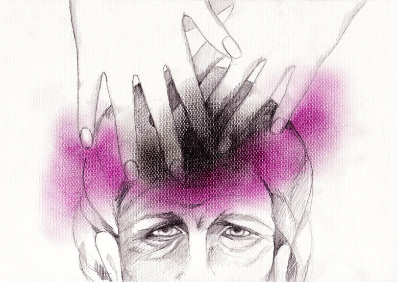

|

|
|
21 Απριλίου 2002. Με τους φίλους πάμε επίσκεψη στην υπέργηρη, τυφλή, φίλη κυρία Ρ. Το σώμα της
υποφέρει. Ανησυχεί για την ιδιαίτερα υψηλή της πίεση. Η φίλη βάζει τα χέρια της στην κορυφή του
κεφαλιού της κυρίας Ρ. (στο 7ο ενεργειακό κέντρο) και συγκεντρώνεται. Παρατηρώ ένα μαύρο σύννεφο να
καλύπτει τα χέρια της και μετά να εξαφανίζεται. Σε λίγο, ο χώρος γύρω τους γεμίζει από μωβ ενέργεια.
Το μαύρο δεν υπάρχει πια. Η διαδικασία ολοκληρώνεται σε πέντε λεπτά.
Η επίδραση ήταν άμεση. Αμέσως μετά η πίεση της κυρίας Ρ. από πολύ υψηλές μονάδες που έδειξε το
πιεσόμετρο πριν την μετάγγιση ενέργειας, ξαναμετριέται τώρα με το ίδιο όργανο και δίνει τελείως
φυσιολογική τιμή.
΄Εχω την αίσθηση ότι το μαύρο που βλέπω στην αρχή να αναδύεται από την κυρία Ρ. και στη συνέχεια να
εξατμίζεται είναι ο φόβος της, η θλίψη από τη μοναξιά της. Μέσω της φίλης, ο Κύριος πήρε κάθε φόβο και
κάθε θλίψη, κυριολεκτικά. Κατάλαβα ότι η ενέργεια της μωβ συχνότητας, ήταν αυτή που βοήθησε την κυρία
Ρ. Η ρήση «η
Πίστη σου σέσωκέ σε» είναι κυριολεκτική. Η κυρία Ρ. έχει πει επανειλημμένα στη φίλη
«πόσο ωραία νιώθω όταν βάζεις τα χέρια σου πάνω μου». ΄Ετσι, αυτή τη φορά αμέσως μόλις η φίλη
της το πρότεινε, η υπέργηρη γυναίκα δέχθηκε αμέσως και αφέθηκε με απόλυτη εμπιστοσύνη.
|
|
|
|
Συνειδητοποίησα ότι η θεραπεία είναι αυτοθεραπεία κι ότι αυτή επιτυγχάνεται, όπως
εννοείται από την ίδια τη λέξη, αρχίζοντας πάντα από τον εαυτό μας.
Πέντε χρόνια αργότερα βρέθηκα η ίδια σε μία πολύ επώδυνη κατάσταση. Είχα έντονους πόνους στην κλείδα
του αριστερού μου ώμου και δεν μπορούσα να κινήσω καθόλου το χέρι μου. Είχα πάψει να το χρησιμοποιώ,
με αποτέλεσμα να μην μπορώ να οδηγήσω, να δουλέψω, αλλά ούτε και να κοιμηθώ από τους πόνους. Πέρασαν
δύο μέρες, χωρίς να πάρω κανένα φάρμακο, με την ελπίδα ότι θα βελτιωθεί με τη βοήθεια μιας καυστικής
κρέμας. Το αποτέλεσμα ήταν το χέρι μου να βρεθεί στα πρόθυρα της αγκύλωσης. Φοβήθηκα ότι πρέπει να πάω
στο γιατρό και να πάρω δυνατά φάρμακα για να αντιμετωπίσω μια μακροχρόνια κατάσταση.
Την τρίτη μέρα, μετά τη δουλειά μου, είχαμε ραντεβού με τη φίλη. Με ρώτησε αν ήθελα να μου μεταγγίσει
ενέργεια στον πονεμένο μου ώμο. «Και το ρωτάς; φυσικά και θέλω» της είπα. Βάζει τα χέρια της πάνω στον
ώμο μου και συγκεντρωνόμαστε. Αρχίζω να νιώθω σα να με έχουν ναρκώσει. Μου έρχεται βήχας, όπως κάποτε,
μετά από μία εγχείρηση που είχα κάνει, συνερχόμουν από νάρκωση και έβηχα λόγω του αναισθητικού.
Ένιωσα, λοιπόν, σα να είχα πάρει μία ελαφριά νάρκωση. Πέρασαν πέντε περίπου λεπτά. Αργά αργά άρχισα να
ξαπλώνω στο κρεβάτι όπου καθόμουν. Μετά από λίγο έκανα την πρώτη προσπάθεια να κινήσω το χέρι μου.
Αυτό κινήθηκε, σα να «ξυπνούσε» από πιάσιμο. Την ίδια στιγμή, ο πόνος σταμάτησε ακαριαία και έκανα
σχεδόν όλες τις κινήσεις. Την επόμενη μέρα, το χέρι λειτουργούσε κανονικά, δίχως να νιώθω πλέον το
παραμικρό από ό,τι είχε προηγηθεί.
|
|
|
Ήταν πράγματι εντυπωσιακό αυτό που είχα ζήσει. Ήξερα πια, μέσα από το ίδιο μου το σώμα, ότι ήταν
εφικτή η συμπύκνωση του γήινου χρόνου μέχρι το σημείο της αυτοματοποίησης, με αποτέλεσμα αυτό που
αποκαλούμε
θαύμα. Κατά τη μετάγγιση της ενέργειας δεν ήξερα τι γινόταν, αλλά είχα απόλυτη πίστη σε θετικά
και μόνον αποτελέσματα. Γνωρίζω ότι αυτή η πίστη είναι που τα έφερε.
Είχα δει με τα μάτια μου την υψηλή πίεση μιας γηραιάς γυναίκας να πέφτει αμέσως. Τώρα βίωνα στο ίδιο
μου το σώμα την πλήρη ανακούφιση του πόνου και την επιστροφή σε κανονική κίνηση ενός μέλους του
σώματός μου, του οποίου είχε πληγεί η λειτουργική δυνατότητα. Αργότερα, αναφέρω το πώς θεραπεύτηκε μια φίλη από το δερματικό της που ήταν σε πλήρη έξαρση.
Αναλογίζομαι ότι ήταν τρεις διαφορετικές ιατρικές περιπτώσεις: υψηλή αρτηριακή πίεση, λειτουργική
ανικανότητα κίνησης και δερματικό. Σκέφτομαι ότι οι δυνατότητες της ενέργειας είναι άπειρες κι ότι
πράγματι μπορεί να κάνει θαύματα όταν υπάρχει εσωτερική δύναμη και πίστη.
|
|
{kind=link}
{kind=link}
{kind=link}